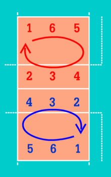

กฎกติกา
- กรรมการผู้ตัดสินจะเสี่ยงเหรียญเพื่อหาทีมที่จะได้เลือกระหว่าง เสิร์ฟ/รับเสิร์ฟ หรือเลือกแดน โดยจะทำการเสี่ยงเหรียญในเซ็ตแรกและเซ็ตตัดสิน
- ผู้เสิร์ฟ จะต้องเสิร์ฟจากด้านหลังของสนามโดยยืนไม่เลยแนวเส้นข้างและห้ามเหยียบเส้นหลัง โยนบอลและตีกลางอากาศให้บอลข้ามตาข่ายไปยังแดนของคู่แข่งภายใน 8 วินาทีหลังกรรมการให้สัญญาณ
- ขณะที่มีการเสิร์ฟโดยถูกกติกา แต่มีผู้เล่นยืนผิดตำแหน่งในขณะนั้น ทีมที่ยืนผิดตำแหน่งจะเสียคะแนน แต่หากคนเสิร์ฟทำผิดกติกาแม้จะมีการยืนผิดตำแหน่งในขณะนั้นก็จะถือว่าทีมที่เสิร์ฟเป็นฝ่ายเสียคะแนน
- ห้ามผู้เล่นทีมรับเสิร์ฟทำการบล็อกหรือตบบอลที่ถูกเสิร์ฟมา
- บอลสามารถสัมผัสตาข่ายได้ทั้งในการเสิร์ฟและระหว่างเล่น แต่ผู้เล่นไม่มีสิทธิ์สัมผัสตาข่ายในขณะที่บอลยังถูกเล่นอยู่ตามกติกา
- เมื่อเสิร์ฟบอลข้ามตาข่าย แล้วบอลลงในแดนคู่แข่งทันที หรือคู่แข่งพยายามรับบอลจนบอลออกนอกสนามไป เรียกว่า เอซ (Ace) ทีมที่เสิร์ฟจะได้คะแนนนั้น
- ผู้เล่นทีมรับเสิร์ฟ จะต้องพยายามรับบอลแรกโดยไม่ปล่อยให้บอลตกลงพื้นในแดนของตน และต่อบอลไปยังผู้เล่นที่เรียกว่าตัวเซ็ต เพื่อตั้งบอลให้กับผู้เล่นที่จะตีบอลรุกไปยังแดนตรงข้ามเพื่อทำคะแนน เมื่อบอลตกลงพื้นหรือเกิดความผิดพลาดต่างๆ จะถือว่าการเล่นคะแนนนั้นได้สิ้นสุดลง
- ผู้เล่นแต่ละทีม มีสิทธิ์ต่อบอลได้ไม่เกิน 3 ครั้งก่อนตีไปยังแดนคู่แข่ง (ไม่นับรวมการบล็อก) โดยผู้เล่นแต่ละคนไม่มีสิทธิ์ต่อบอลติดต่อกัน 2 ครั้ง ยกเว้นมีผู้เล่นคนอื่นมาต่อบอลคั่นก่อน 1 ครั้งจึงจะต่อบอลได้อีก
- ผู้เล่นตำแหน่งแดนหลังและลิเบโร ไม่มีสิทธิ์กระโดดตีบอลหรือบล็อกบอลได้ ยกเว้นผู้เล่นแดนหลังกระโดดมาจากหลังเส้น 3 เมตรเพื่อตีบอล
- ผู้เล่นไม่มีสิทธิ์ใช้ผู้เล่นคนอื่นในการส่งตัวเองเพื่อให้เข้าถึงบอล
- ผู้เล่นไม่มีสิทธิ์เล่นบอลหากบอลยังอยู่ในแดนของคู่แข่ง
- เมื่อบอลสัมผัสพื้นสนามหรือมีความผิดพลาดในการเล่น ฝ่ายที่ไม่ได้ทำผิดพลาดจะได้คะแนนนั้นไป และทีมที่ได้คะแนนจะต้องเป็นฝ่ายเสิร์ฟในคะแนนต่อไป
- เมื่อทีมที่เสิร์ฟสามารถทำคะแนนได้ ผู้ที่เสิร์ฟในคะแนนถัดไปต้องเป็นผู้เล่นในตำแหน่งเดิม แต่สามารถเปลี่ยนตัวผู้เล่นมาเสิร์ฟได้
- เมื่อทีมที่เสิร์ฟเสียคะแนนนั้น ผู้เล่นอีกฝ่ายจะได้สิทธิ์เสิร์ฟคะแนนถัดไปแทน แต่ต้องหมุนตำแหน่งไปตามเข็มนาฬิกาเพื่อเปลี่ยนคนไปเสิร์ฟ กล่าวคือ ผู้เล่นตำแหน่งที่ 2 ต้องหมุนลงมาตำแหน่งที่ 1 เพื่อเสิร์ฟ และตำแหน่งอื่นๆต้องหมุนตามมาเช่นกัน คือ 2>1>6>5>4>3>2
- เปลี่ยนแดนเมื่อจบแต่ละเซ็ต ส่วนเซ็ตที่ 5 หรือเซ็ตตัดสินจะเปลี่ยนแดนเมื่อทีมใดทีมหนึ่งถึงคะแนนที่ 8 ก่อน
